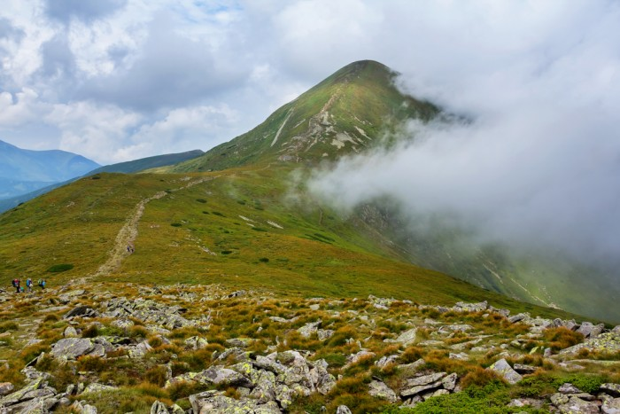

Географічні відомості
Гора Бребенескул в Карпатах є найвищою в Чорногорському масиві і другий за висотою в Україні після Говерли. На її вершині відкриваються неймовірно мальовничі пейзажі, видно весь Чорногірський хребет до Піп-Івана Це одна з карпатських вершин, де точно варто побувати. Історія гори Бребенескул Висота вершини досягає 2032 метрів. Поверхня вкрита альпійськими і субальпійськими луками, за формою дещо нагадує купол. Для неї характерні кам'яні осипи. Схили гори утворюють давньольодовикові форми рельєфу - сліди тривалих процесів морозного вивітрювання. У спекотне літо тут можна побачити сніг, а взимку часто сходять лавини.
Як доїхати
Гора Бребенескул розташована посередині Чорногірського хребта, на кордоні між Закарпатською та Івано-Франківською областями. Поруч з нею вершини Менчул на південному сході і Ребра на північному заході. Найближче поселення до гори - село Бистрець в Івано-Франківській області. До нього можна доїхати рейсовими автобусами з Дземброні або Рахова.

Сходження на Говерлу
На радість туристів, вершина Говерли для тих, хто вилізли сюди, є дуже зручною, оскільки являє собою невеликий плаский майданчик, а красу краєвидів, що відкриваються з неї на всі 360 градусів навколо, словами передати неможливо. Вершина Говерли вкрита альпійськими травами, на ній стоїть флагшток з прапором, тризуб, а також хрест. Також на Говерлі стоїть обеліск висотою в кілька метрів, що позначає вищу точку кордону Польщі та Чехословаччини, що проходив тут колись. 
Не дивно, що Говерла є популярним об'єктом для туристів, щороку тисячі людей здійснюють сходження на гору. Це можна зробити з початку травня до кінця вересня, в інший час, через підвищений ризик, на гору пропустять тільки професійних альпіністів. Загалом, в гарну погоду підйом на Говерлу займає 2,5-3 години. Під час підйому будьте гранично обережні, адже, на жаль, нерідкі випадки травматизму серед туристів, які не дотримуються заходів безпеки, трапляються і смертельні випадки.